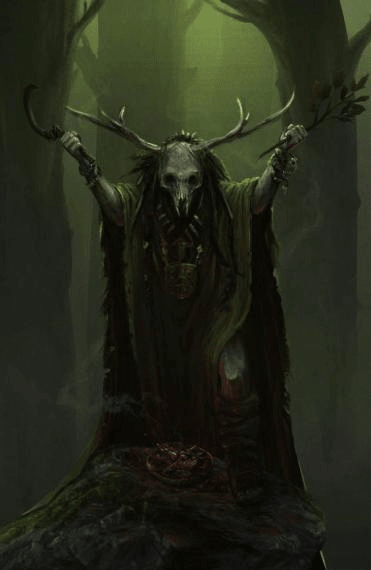

Resumen
Título: ???
Afiliación: Self
Lugar de Origen o donde fué conocido: Bosque cerca de Khundrukar
Edad: ???
Raza: Elf
Clase: Druid
Tamaño: Medium
Apariencia
Druida vestido en un robe y lleno de collares y anillos de la naturaleza. Usa una máscara de calavera de venado.
Athen
Athen es una persona muy misteriosa que ha vivido cientos de años. Es amigo de los centauros de las Planicies de Pentel, y va de vez en cuando a platicar con Terrek. Es muy difícil de encontrar y de contactarlo y es colector de objetos mágicos.
Se cree que Dikath lo estaba buscando porque trató de contactar a un demonio, y también le enseña magias extrañas a sus Kenkus ayudantes. (Magia que mata naturaleza, cuando un druida no deberia matar a la naturaleza).